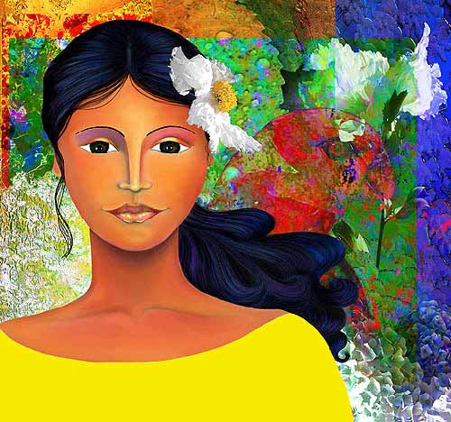

Ileana Frómeta Grillo
DIGITAL COLLAGE
NOTES
Ileana Frómeta Grillo lives in Laguna Beach, California, with her husband and "two rambunctious dogs and a tolerant cat." She was born and raised Caracas, Venezuela, and began her art studies at the Fine Arts Museum in Caracas, specializing in charcoal drawing, portraiture and oil pastels. She moved to California in 1980, where she studied four years in the art program at Cal State University at San Bernardino followed by two years of black- and-white photography study with Andrew Shumaker at the University of Redlands.
In 1988 she was introduced to digital media with the program Painter and a Macintosh computer. Her artwork contains imagery and symbolism culled from her Caribbean and South American roots and combines a traditional style with modern elements. She has illustrated a children's book now in its second printing in Venezuela and has exhibited and sold her pieces in Venezuela, Hawaii and California. and was recently awarded a finalist position in the MacWorld Expo 2000 Digital Art Contest. Some of her clients include the government of the City of Caracas, Xerox Corporation and United Digital Artists.Ileana writes, "In general, my pictures consist of a collage composed of imagery created in Painter and captured with my digital camera and then 'blended in' in Photoshop.
My current hardware consists of a PowerMac 7500 with 400MHz G4 processor upgrade, 350MB of RAM, 17-inch NEC Monitor, 13GB hard drive, LaCie CD-RW, Wacom Intuos 6x8 inch tablet, HP ScanJet scanner, and a Canon S-10 2.2 megapixel digital camera.
The color combination that I tend to use is surely a reflection of my Caribbean roots. My more 'classical' training in fine arts drew me to the 'dreamy' and symbolic imagery of Dali and Magritte . I also find inspiration in the color and design of contemporary works by Gauguin, Matisse and David Hockney. I was influenced by the work of Caribbean artists such as Candido Bidó (Dominican Republic), Hector Poleo (Venezuela), and Nivia Gonzales and Pegge Hopper (USA)".
MOCA's contributing editor JD Jarvis reviews Ileana Frómeta Grillo's digital art
Includes photo of Ileana in her studio
JD Jarvis review of Ileana's art
Hope Returns
|
 |